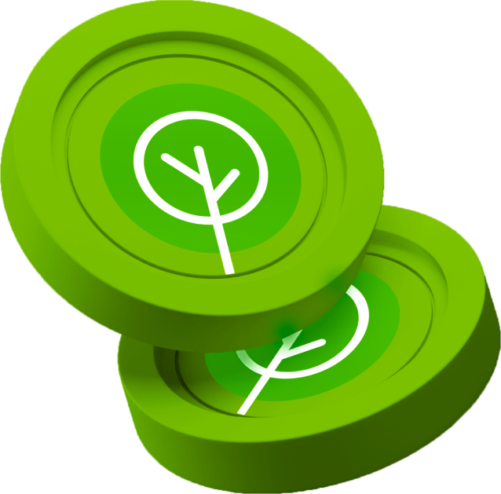

My lovely planet se dedica a plantar árboles en Madagascar, utilizando una dinámica innovadora en Instagram bajo el lema "Por cada persona que nos siga, plantaremos un árbol".
Cada nuevo seguidor en su perfil de redes sociales se traduce directamente en un árbol plantado, lo que permite a las personas contribuir al reforestamiento de una de las regiones más afectadas por la deforestación en el mundo. Este enfoque no solo promueve la conciencia ambiental, sino que también involucra activamente a la comunidad global en la lucha contra el cambio climático y la conservación de los ecosistemas.
Además, la fundación ha lanzado una criptomoneda en la que las personas pueden invertir para apoyar sus actividades. Como una asociación sin fines de lucro, todos los fondos recaudados a través de esta criptomoneda y otras donaciones se destinan íntegramente a la plantación de árboles y proyectos relacionados con la sostenibilidad.
Esta combinación de redes sociales y tecnología blockchain permite a la fundación maximizar su impacto, asegurando que cada contribución, por pequeña que sea, se traduzca en una acción tangible para el medio ambiente.
